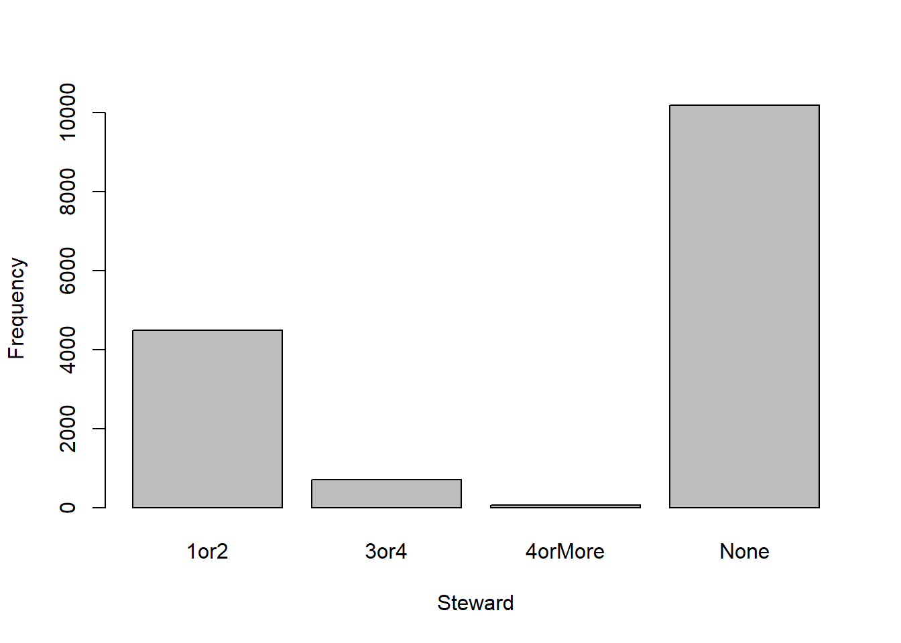

Code
library(tidyverse)
library(ggplot2)
library(formattable)
library(dbplyr)
library(summarytools)
library(stargazer)
library(MASS)Greenery is widely recognized as a vital element to any public space. Plants and natural elements of all kinds can add immense benefits to urban areas, not only to the environment but to the humans who inhabit the space as well. Studies have shown that urban greening, specifically the planting of trees, can “combat challenges such as pollution, urban heat, and flooding, as well as to improve social cohesion, human health, and well-being.”1 The understanding and implementation of this information can lead cities, developers, and anyone with a stake in their community to consciously consider what elements they can incorporate into their own public spaces. The work does not end here though, greenery in public spaces requires maintenance and year-round management to make these efforts last long enough to see the benefits.
New York City, with a population of about 8.4 billion people and 300 square miles, is one of the largest urban spaces in the United States.2 In 1995, the New York City Department of Parks and Recreation conducted a city wide census of all the trees. They again conducted this survey in 2005 and 2015 to tackle their goal of enhancing and restoring urban forests.3 The information this survey collected has been used to create an interactive map of tree species around New York City. The Parks department then uses this data to calculate the related impacts and needs associated with the trees and tree maintenance.4
While there is a large amount of data related to the tree census published, there is a gap in information on the relation between tree data to specific boroughs. Critically analyzing this tree data on a neighborhood level can lead to further community involvement within and stemming from boroughs themselves.5. Firsthand involvement can be used to develop connections between community members and foster ownership among members with the environment they inhabit.
This informs my research question:
New York City itself is a diverse landscape with features both conducive and preventive to tree growth and sustainability. Neighborhoods across the city can see significant changes in income, traffic, infrastructure, natural resources such water or sunlight, and attitudes towards the environment.6 Tree size can relay information to researchers on the development and sustainability of their goal to promote urban greening.7 This information can then be used to inform and direct spending and efforts. While there exists a study by Jian Lin, Qiang Wang, and Xiaojiang Li regarding tree characteristics related to socioeconomic and spatial inequalities, my research aims to focus in tree characteristics to specific named neighborhoods.8 Rather than using socioeconomic elements, my research question is focused on smaller geographic areas where individuals can identify themselves as members on a personal level with their borough.
With these factors, I can test the hypothesis:
H1: There is a significant difference in tree diameter based on which New York City borough the tree is located.
H2: There is a significant difference in tree health based on which New York City borough the tree is located.
library(tidyverse)
library(ggplot2)
library(formattable)
library(dbplyr)
library(summarytools)
library(stargazer)
library(MASS)library(readxl)
treecensus <- read_excel("C:/Users/aep05/Documents/UMASS_GRAD_SCHOOL/DACSS 603/603_Spring_2023/posts/finalproject/2015_Street_Tree_Census.xls")
print(treecensus)# A tibble: 16,383 x 45
tree_id block_id created_at tree_dbh stump_d~1 curb_~2 status health
<dbl> <dbl> <dttm> <dbl> <dbl> <chr> <chr> <chr>
1 180683 348711 2015-08-27 00:00:00 3 0 OnCurb Alive Fair
2 200540 315986 2015-09-03 00:00:00 21 0 OnCurb Alive Fair
3 204026 218365 2015-09-05 00:00:00 3 0 OnCurb Alive Good
4 204337 217969 2015-09-05 00:00:00 10 0 OnCurb Alive Good
5 189565 223043 2015-08-30 00:00:00 21 0 OnCurb Alive Good
6 190422 106099 2015-08-30 00:00:00 11 0 OnCurb Alive Good
7 190426 106099 2015-08-30 00:00:00 11 0 OnCurb Alive Good
8 208649 103940 2015-09-07 00:00:00 9 0 OnCurb Alive Good
9 209610 407443 2015-09-08 00:00:00 6 0 OnCurb Alive Good
10 192755 207508 2015-08-31 00:00:00 21 0 Offset~ Alive Fair
# ... with 16,373 more rows, 37 more variables: spc_latin <chr>,
# spc_common <chr>, steward <chr>, guards <chr>, sidewalk <chr>,
# user_type <chr>, problems <chr>, root_stone <chr>, root_grate <chr>,
# root_other <chr>, trunk_wire <chr>, trnk_light <chr>, trnk_other <chr>,
# brch_light <chr>, brch_shoe <chr>, brch_other <chr>, address <chr>,
# postcode <dbl>, zip_city <chr>, `community board` <dbl>, borocode <dbl>,
# borough <chr>, cncldist <dbl>, st_assem <dbl>, st_senate <dbl>, ...This data set is obtained from the 2015 tree census through NYC Open Data provided by the New York City Department of Parks and Recreation.9
The information was collected by predominantly volunteers in addition to the New York City Department of Parks and Recreation staff.
There are 45 variables and 16,383 observations.
summary(treecensus) tree_id block_id created_at
Min. : 306 Min. :100078 Min. :2015-05-19 00:00:00
1st Qu.:182110 1st Qu.:216192 1st Qu.:2015-08-28 00:00:00
Median :195703 Median :301941 Median :2015-09-01 00:00:00
Mean :189968 Mean :283657 Mean :2015-08-30 16:07:33
3rd Qu.:206443 3rd Qu.:345725 3rd Qu.:2015-09-06 00:00:00
Max. :276846 Max. :516315 Max. :2015-10-01 00:00:00
tree_dbh stump_diam curb_loc status
Min. : 0.00 Min. : 0.0000 Length:16383 Length:16383
1st Qu.: 4.00 1st Qu.: 0.0000 Class :character Class :character
Median : 9.00 Median : 0.0000 Mode :character Mode :character
Mean : 10.87 Mean : 0.5174
3rd Qu.: 15.00 3rd Qu.: 0.0000
Max. :425.00 Max. :140.0000
health spc_latin spc_common steward
Length:16383 Length:16383 Length:16383 Length:16383
Class :character Class :character Class :character Class :character
Mode :character Mode :character Mode :character Mode :character
guards sidewalk user_type problems
Length:16383 Length:16383 Length:16383 Length:16383
Class :character Class :character Class :character Class :character
Mode :character Mode :character Mode :character Mode :character
root_stone root_grate root_other trunk_wire
Length:16383 Length:16383 Length:16383 Length:16383
Class :character Class :character Class :character Class :character
Mode :character Mode :character Mode :character Mode :character
trnk_light trnk_other brch_light brch_shoe
Length:16383 Length:16383 Length:16383 Length:16383
Class :character Class :character Class :character Class :character
Mode :character Mode :character Mode :character Mode :character
brch_other address postcode zip_city
Length:16383 Length:16383 Min. : 83 Length:16383
Class :character Class :character 1st Qu.:10308 Class :character
Mode :character Mode :character Median :11207 Mode :character
Mean :10858
3rd Qu.:11356
Max. :11697
community board borocode borough cncldist
Min. :101.0 Min. :1.00 Length:16383 Min. : 1.00
1st Qu.:212.0 1st Qu.:2.00 Class :character 1st Qu.:17.00
Median :315.0 Median :3.00 Mode :character Median :29.00
Mean :322.4 Mean :3.16 Mean :28.15
3rd Qu.:407.0 3rd Qu.:4.00 3rd Qu.:39.00
Max. :503.0 Max. :5.00 Max. :51.00
st_assem st_senate nta nta_name
Min. :23.00 Min. :10.00 Length:16383 Length:16383
1st Qu.:36.00 1st Qu.:15.00 Class :character Class :character
Median :52.00 Median :21.00 Mode :character Mode :character
Mean :51.51 Mean :21.06
3rd Qu.:65.00 3rd Qu.:26.00
Max. :87.00 Max. :36.00
boro_ct state latitude longitude
Min. :1000201 Length:16383 Min. :40.50 Min. :-74.25
1st Qu.:2044200 Class :character 1st Qu.:40.64 1st Qu.:-73.98
Median :3063800 Mode :character Median :40.72 Median :-73.95
Mean :3196724 Mean :40.71 Mean :-73.94
3rd Qu.:4071900 3rd Qu.:40.77 3rd Qu.:-73.89
Max. :5030302 Max. :40.91 Max. :-73.71
x_sp y_sp council district census tract
Min. : 914125 Min. :121318 Min. : 1.0 Min. : 1
1st Qu.: 990034 1st Qu.:171719 1st Qu.:18.0 1st Qu.: 159
Median : 998821 Median :200164 Median :29.0 Median : 393
Mean : 999537 Mean :196583 Mean :28.2 Mean : 8356
3rd Qu.:1015348 3rd Qu.:219429 3rd Qu.:39.0 3rd Qu.: 1113
Max. :1065861 Max. :269471 Max. :51.0 Max. :157901
NA's :169 NA's :169
bin bbl
Min. :1000000 Min. :1.000e+09
1st Qu.:2112823 1st Qu.:2.054e+09
Median :3255106 Median :3.067e+09
Mean :3272538 Mean :3.200e+09
3rd Qu.:4143916 3rd Qu.:4.041e+09
Max. :5166656 Max. :5.079e+09
NA's :267 NA's :267 Full list of variables:
colnames(treecensus) [1] "tree_id" "block_id" "created_at" "tree_dbh"
[5] "stump_diam" "curb_loc" "status" "health"
[9] "spc_latin" "spc_common" "steward" "guards"
[13] "sidewalk" "user_type" "problems" "root_stone"
[17] "root_grate" "root_other" "trunk_wire" "trnk_light"
[21] "trnk_other" "brch_light" "brch_shoe" "brch_other"
[25] "address" "postcode" "zip_city" "community board"
[29] "borocode" "borough" "cncldist" "st_assem"
[33] "st_senate" "nta" "nta_name" "boro_ct"
[37] "state" "latitude" "longitude" "x_sp"
[41] "y_sp" "council district" "census tract" "bin"
[45] "bbl" dfSummary(treecensus)Data Frame Summary
treecensus
Dimensions: 16383 x 45
Duplicates: 0
-----------------------------------------------------------------------------------------------------------------------------------
No Variable Stats / Values Freqs (% of Valid) Graph Valid Missing
---- ------------------- -------------------------------------- ----------------------- ---------------------- ---------- ---------
1 tree_id Mean (sd) : 189967.8 (26810.9) 16383 distinct values : 16383 0
[numeric] min < med < max: . : (100.0%) (0.0%)
306 < 195703 < 276846 : :
IQR (CV) : 24333 (0.1) : :
. : :
2 block_id Mean (sd) : 283657.4 (116242.5) 5414 distinct values . : 16383 0
[numeric] min < med < max: : : : (100.0%) (0.0%)
100078 < 301941 < 516315 : : . : :
IQR (CV) : 129532.5 (0.4) : : : : : : :
: : : : : : :
3 created_at min : 2015-05-19 120 distinct values : 16383 0
[POSIXct, POSIXt] med : 2015-09-01 : (100.0%) (0.0%)
max : 2015-10-01 : .
range : 4m 12d : :
. : :
4 tree_dbh Mean (sd) : 10.9 (8.8) 54 distinct values : 16383 0
[numeric] min < med < max: : (100.0%) (0.0%)
0 < 9 < 425 :
IQR (CV) : 11 (0.8) :
:
5 stump_diam Mean (sd) : 0.5 (3.7) 55 distinct values : 16383 0
[numeric] min < med < max: : (100.0%) (0.0%)
0 < 0 < 140 :
IQR (CV) : 0 (7.1) :
:
6 curb_loc 1. OffsetFromCurb 830 ( 5.1%) I 16383 0
[character] 2. OnCurb 15553 (94.9%) IIIIIIIIIIIIIIIIII (100.0%) (0.0%)
7 status 1. Alive 15442 (94.3%) IIIIIIIIIIIIIIIIII 16383 0
[character] 2. Dead 412 ( 2.5%) (100.0%) (0.0%)
3. Stump 529 ( 3.2%)
8 health 1. Fair 3085 (20.0%) III 15442 941
[character] 2. Good 11434 (74.0%) IIIIIIIIIIIIII (94.3%) (5.7%)
3. Poor 923 ( 6.0%) I
9 spc_latin 1. Platanus x acerifolia 1981 (12.8%) II 15442 941
[character] 2. Gleditsia triacanthos var 1610 (10.4%) II (94.3%) (5.7%)
3. Quercus palustris 1354 ( 8.8%) I
4. Pyrus calleryana 1350 ( 8.7%) I
5. Acer platanoides 936 ( 6.1%) I
6. Tilia cordata 783 ( 5.1%) I
7. Zelkova serrata 752 ( 4.9%)
8. Styphnolobium japonicum 733 ( 4.7%)
9. Ginkgo biloba 629 ( 4.1%)
10. Fraxinus pennsylvanica 399 ( 2.6%)
[ 105 others ] 4915 (31.8%) IIIIII
10 spc_common 1. London planetree 1981 (12.8%) II 15442 941
[character] 2. honeylocust 1610 (10.4%) II (94.3%) (5.7%)
3. pin oak 1354 ( 8.8%) I
4. Callery pear 1350 ( 8.7%) I
5. Norway maple 936 ( 6.1%) I
6. littleleaf linden 783 ( 5.1%) I
7. Japanese zelkova 752 ( 4.9%)
8. Sophora 733 ( 4.7%)
9. ginkgo 629 ( 4.1%)
10. green ash 399 ( 2.6%)
[ 105 others ] 4915 (31.8%) IIIIII
11 steward 1. 1or2 4481 (29.0%) IIIII 15442 941
[character] 2. 3or4 711 ( 4.6%) (94.3%) (5.7%)
3. 4orMore 70 ( 0.5%)
4. None 10180 (65.9%) IIIIIIIIIIIII
12 guards 1. Harmful 819 ( 5.3%) I 15442 941
[character] 2. Helpful 1675 (10.8%) II (94.3%) (5.7%)
3. None 12654 (81.9%) IIIIIIIIIIIIIIII
4. Unsure 294 ( 1.9%)
13 sidewalk 1. Damage 4781 (31.0%) IIIIII 15442 941
[character] 2. NoDamage 10661 (69.0%) IIIIIIIIIIIII (94.3%) (5.7%)
14 user_type 1. NYC Parks Staff 589 ( 3.6%) 16383 0
[character] 2. TreesCount Staff 6505 (39.7%) IIIIIII (100.0%) (0.0%)
3. Volunteer 9289 (56.7%) IIIIIIIIIII
15 problems 1. None 8664 (56.1%) IIIIIIIIIII 15442 941
[character] 2. Stones 2592 (16.8%) III (94.3%) (5.7%)
3. BranchLights 755 ( 4.9%)
4. Stones,BranchLights 582 ( 3.8%)
5. RootOther 479 ( 3.1%)
6. BranchOther 286 ( 1.9%)
7. TrunkOther 281 ( 1.8%)
8. Stones,RootOther 205 ( 1.3%)
9. Stones,TrunkOther 126 ( 0.8%)
10. Stones,BranchOther 125 ( 0.8%)
[ 89 others ] 1347 ( 8.7%) I
16 root_stone 1. No 12321 (75.2%) IIIIIIIIIIIIIII 16383 0
[character] 2. Yes 4062 (24.8%) IIII (100.0%) (0.0%)
17 root_grate 1. No 16232 (99.1%) IIIIIIIIIIIIIIIIIII 16383 0
[character] 2. Yes 151 ( 0.9%) (100.0%) (0.0%)
18 root_other 1. No 15106 (92.2%) IIIIIIIIIIIIIIIIII 16383 0
[character] 2. Yes 1277 ( 7.8%) I (100.0%) (0.0%)
19 trunk_wire 1. No 16002 (97.7%) IIIIIIIIIIIIIIIIIII 16383 0
[character] 2. Yes 381 ( 2.3%) (100.0%) (0.0%)
20 trnk_light 1. No 16338 (99.7%) IIIIIIIIIIIIIIIIIII 16383 0
[character] 2. Yes 45 ( 0.3%) (100.0%) (0.0%)
21 trnk_other 1. No 15479 (94.5%) IIIIIIIIIIIIIIIIII 16383 0
[character] 2. Yes 904 ( 5.5%) I (100.0%) (0.0%)
22 brch_light 1. No 14488 (88.4%) IIIIIIIIIIIIIIIII 16383 0
[character] 2. Yes 1895 (11.6%) II (100.0%) (0.0%)
23 brch_shoe 1. No 16370 (99.9%) IIIIIIIIIIIIIIIIIII 16383 0
[character] 2. Yes 13 ( 0.1%) (100.0%) (0.0%)
24 brch_other 1. No 15483 (94.5%) IIIIIIIIIIIIIIIIII 16383 0
[character] 2. Yes 900 ( 5.5%) I (100.0%) (0.0%)
25 address 1. 3311 HYLAN BOULEVARD 21 ( 0.1%) 16383 0
[character] 2. 479 CLERMONT AVENUE 20 ( 0.1%) (100.0%) (0.0%)
3. 90-016 QUEENS BOULEVARD 19 ( 0.1%)
4. 3975 BROADWAY 17 ( 0.1%)
5. 443 CLERMONT AVENUE 17 ( 0.1%)
6. 3718 BROADWAY 14 ( 0.1%)
7. 105-002 ROCKAWAY BEACH BO 13 ( 0.1%)
8. 1965 BROADWAY 12 ( 0.1%)
9. 1600 AVENUE L 11 ( 0.1%)
10. 45 WEST 81 STREET 11 ( 0.1%)
[ 12193 others ] 16228 (99.1%) IIIIIIIIIIIIIIIIIII
26 postcode Mean (sd) : 10858.2 (731.3) 170 distinct values : 16383 0
[numeric] min < med < max: : (100.0%) (0.0%)
83 < 11207 < 11697 : :
IQR (CV) : 1048 (0.1) : :
: :
27 zip_city 1. Brooklyn 4638 (28.3%) IIIII 16383 0
[character] 2. New York 2771 (16.9%) III (100.0%) (0.0%)
3. Staten Island 2074 (12.7%) II
4. Bronx 1395 ( 8.5%) I
5. Astoria 966 ( 5.9%) I
6. Jackson Heights 404 ( 2.5%)
7. Forest Hills 393 ( 2.4%)
8. Flushing 310 ( 1.9%)
9. Ridgewood 286 ( 1.7%)
10. Kew Gardens 275 ( 1.7%)
[ 34 others ] 2871 (17.5%) III
28 community board Mean (sd) : 322.4 (124.9) 59 distinct values : 16383 0
[numeric] min < med < max: : (100.0%) (0.0%)
101 < 315 < 503 . : :
IQR (CV) : 195 (0.4) : . : : :
: : : : : :
29 borocode Mean (sd) : 3.2 (1.3) 1 : 2805 (17.1%) III 16383 0
[numeric] min < med < max: 2 : 1395 ( 8.5%) I (100.0%) (0.0%)
1 < 3 < 5 3 : 4638 (28.3%) IIIII
IQR (CV) : 2 (0.4) 4 : 5471 (33.4%) IIIIII
5 : 2074 (12.7%) II
30 borough 1. Bronx 1395 ( 8.5%) I 16383 0
[character] 2. Brooklyn 4638 (28.3%) IIIII (100.0%) (0.0%)
3. Manhattan 2805 (17.1%) III
4. Queens 5471 (33.4%) IIIIII
5. Staten Island 2074 (12.7%) II
31 cncldist Mean (sd) : 28.1 (15) 51 distinct values . : : 16383 0
[numeric] min < med < max: : : . . : (100.0%) (0.0%)
1 < 29 < 51 : : : : : :
IQR (CV) : 22 (0.5) : . : : : : : : : :
: : : : : : : : : :
32 st_assem Mean (sd) : 51.5 (17.7) 65 distinct values : 16383 0
[numeric] min < med < max: : : . : (100.0%) (0.0%)
23 < 52 < 87 : : : : : .
IQR (CV) : 29 (0.3) : : : : : : : : .
: : : : : : : : : :
33 st_senate Mean (sd) : 21.1 (7) 26 distinct values . : : 16383 0
[numeric] min < med < max: : : . : : (100.0%) (0.0%)
10 < 21 < 36 : : . . : : : .
IQR (CV) : 11 (0.3) : : : : : : : . :
: : : : : : : : : :
34 nta 1. QN72 769 ( 4.7%) 16383 0
[character] 2. SI25 646 ( 3.9%) (100.0%) (0.0%)
3. MN12 569 ( 3.5%)
4. BK37 564 ( 3.4%)
5. QN28 516 ( 3.1%)
6. QN17 447 ( 2.7%)
7. QN70 344 ( 2.1%)
8. SI48 324 ( 2.0%)
9. QN60 310 ( 1.9%)
10. SI45 287 ( 1.8%)
[ 173 others ] 11607 (70.8%) IIIIIIIIIIIIII
35 nta_name 1. Steinway 769 ( 4.7%) 16383 0
[character] 2. Oakwood-Oakwood Beach 646 ( 3.9%) (100.0%) (0.0%)
3. Upper West Side 569 ( 3.5%)
4. Park Slope-Gowanus 564 ( 3.4%)
5. Jackson Heights 516 ( 3.1%)
6. Forest Hills 447 ( 2.7%)
7. Astoria 344 ( 2.1%)
8. Arden Heights 324 ( 2.0%)
9. Kew Gardens 310 ( 1.9%)
10. New Dorp-Midland Beach 287 ( 1.8%)
[ 173 others ] 11607 (70.8%) IIIIIIIIIIIIII
36 boro_ct Mean (sd) : 3196724 (1266925) 1031 distinct values : 16383 0
[numeric] min < med < max: . : (100.0%) (0.0%)
1000201 < 3063800 < 5030302 . : :
IQR (CV) : 2027700 (0.4) : . : : :
: : . : : :
37 state 1. New York 16383 (100.0%) IIIIIIIIIIIIIIIIIIII 16383 0
[character] (100.0%) (0.0%)
38 latitude Mean (sd) : 40.7 (0.1) 16373 distinct values . : 16383 0
[numeric] min < med < max: : : (100.0%) (0.0%)
40.5 < 40.7 < 40.9 . . : : :
IQR (CV) : 0.1 (0) : : . : : : . .
. : : : : : : : : .
39 longitude Mean (sd) : -73.9 (0.1) 16372 distinct values : 16383 0
[numeric] min < med < max: : . (100.0%) (0.0%)
-74.3 < -73.9 < -73.7 : :
IQR (CV) : 0.1 (0) : : : :
. : . : : : : . .
40 x_sp Mean (sd) : 999537.1 (27211.1) 16377 distinct values : 16383 0
[numeric] min < med < max: : . (100.0%) (0.0%)
914125.4 < 998820.7 < 1065861 : :
IQR (CV) : 25314.3 (0) : : : :
. : . : : : : . .
41 y_sp Mean (sd) : 196582.8 (31738.5) 16376 distinct values . : 16383 0
[numeric] min < med < max: : : (100.0%) (0.0%)
121317.9 < 200163.6 < 269470.9 . . : : :
IQR (CV) : 47710.3 (0.2) : : . : : : . .
. : : : : : : : : .
42 council district Mean (sd) : 28.2 (15) 51 distinct values : : 16214 169
[numeric] min < med < max: : : . . : (99.0%) (1.0%)
1 < 29 < 51 : : : : : :
IQR (CV) : 21 (0.5) : . : : : : : : : :
: : : : : : : : : :
43 census tract Mean (sd) : 8355.8 (21995.1) 803 distinct values : 16214 169
[numeric] min < med < max: : (99.0%) (1.0%)
1 < 393 < 157901 :
IQR (CV) : 954 (2.6) :
: .
44 bin Mean (sd) : 3272538 (1284178) 11480 distinct values : 16116 267
[numeric] min < med < max: : (98.4%) (1.6%)
1e+06 < 3255106 < 5166656 : : :
IQR (CV) : 2031093 (0.4) : . : : : :
: : : : : : :
45 bbl Mean (sd) : 3200461256 (1264712091) 11123 distinct values : 16116 267
[numeric] min < med < max: : (98.4%) (1.6%)
1000047501 < 3067490055 < 5079440028 . . :
IQR (CV) : 1987790004 (0.4) : . : : : :
: : : : : :
-----------------------------------------------------------------------------------------------------------------------------------At a glance, the columns I am interested in are:
tree_id - Unique identification number for each tree point.
tree_dbh - Diameter of the tree, measured at approximately 54” / 137cm above the ground. Data was collected for both living and dead trees; for stumps, use stump_diam
curb_loc - Location of tree bed in relationship to the curb; trees are either along the curb (OnCurb) or offset from the curb (OffsetFromCurb)
status - Indicates whether the tree is alive, standing dead, or a stump.
health - Indicates the user’s perception of tree health.
spc_latin - Scientific name for species, e.g. “Acer rubrum”
spc_common - Common name for species, e.g. “red maple”
steward - Indicates the number of unique signs of stewardship observed for this tree. Not recorded for stumps or dead trees.
guards - Indicates whether a guard is present, and if the user felt it was a helpful or harmful guard. Not recorded for dead trees and stumps.
sidewalk - Indicates whether one of the sidewalk flags immediately adjacent to the tree was damaged, cracked, or lifted. Not recorded for dead trees and stumps.
root_stone - Indicates the presence of a root problem caused by paving stones in tree bed
root_grate - Indicates the presence of a root problem caused by metal grates in tree bed
root_other - Indicates the presence of other root problems
trunk_wire - Indicates the presence of a trunk problem caused by wires or rope wrapped around the trunk
trnk_light - Indicates the presence of a trunk problem caused by lighting installed on the tree trnk_other - Indicates the presence of other trunk problems
brch_light - Indicates the presence of a branch problem caused by lights (usually string lights) or wires in the branches
brch_shoe - Indicates the presence of a branch problem caused by sneakers in the branches
brch_other - Indicates the presence of other branch problems
postcode - Five-digit zipcode in which tree is located
borocode - Code for borough in which tree point is located: 1 (Manhattan), 2 (Bronx), 3 (Brooklyn), 4 (Queens), 5 (Staten Island)
borough - Name of borough in which tree point is located
nta - This is the NTA Code corresponding to the neighborhood tabulation area from the 2010 US Census that the tree point falls into.
nta_name - This is the NTA name corresponding to the neighborhood tabulation area from the 2010 US Census that the tree point falls into.
boro_ct - This is the boro_ct identifyer for the census tract that the tree point falls into.
group_by(treecensus, status, health)%>%
summarize()`summarise()` has grouped output by 'status'. You can override using the
`.groups` argument.# A tibble: 5 x 2
# Groups: status [3]
status health
<chr> <chr>
1 Alive Fair
2 Alive Good
3 Alive Poor
4 Dead <NA>
5 Stump <NA> Because I am only interested in trees with the status “Alive”, I’ll also need to clean the data set to exclude trees labeled as “Dead” or “Stump”.
treecensus_clean <- treecensus[treecensus$status != "Dead" & treecensus$status != "Stump",]
group_by(treecensus_clean, status, health)%>%
summarize()`summarise()` has grouped output by 'status'. You can override using the
`.groups` argument.# A tibble: 3 x 2
# Groups: status [1]
status health
<chr> <chr>
1 Alive Fair
2 Alive Good
3 Alive Poor The independent variable of interest is the categorization of geographic divisions within New York City into 5 boroughs. This variable is:
borough
The dependent variables of interest are different tree characteristics observed during the census. These variables are:
tree_dbh
health
Additional variables of interest for potential interactions are:
curb_loc
steward
root_stone
root_grate
root_other
trunk_wire
trnk_light
brch_light
trnk_other
brch_shoe
brch_other
#recoding character variables
treecensus_clean <- treecensus_clean %>%
mutate(curb_loc = recode(curb_loc,
"OnCurb" = 1,
"OffsetFromCurb" = 0)) %>%
mutate(health = recode(health,
"Poor" = 1,
"Fair" = 2,
"Good" = 3)) %>%
mutate(steward = recode(steward,
"None" = 0,
"1or2" = 1,
"3or4" = 3,
"4orMore" = 4)) %>%
mutate(sidewalk = recode(sidewalk,
"NoDamage" = 0,
"Damage" = 1)) %>%
mutate(root_stone = recode(root_stone,
"No" = 0,
"Yes" = 1)) %>%
mutate(root_grate = recode(root_grate,
"No" = 0,
"Yes" = 1))%>%
mutate(root_other = recode(root_other,
"No" = 0,
"Yes" = 1))%>%
mutate(trunk_wire = recode(trunk_wire,
"No" = 0,
"Yes" = 1))%>%
mutate(trnk_light = recode(trnk_light,
"No" = 0,
"Yes" = 1))%>%
mutate(trnk_other = recode(trnk_other,
"No" = 0,
"Yes" = 1))%>%
mutate(brch_light = recode(brch_light,
"No" = 0,
"Yes" = 1))%>%
mutate(brch_shoe = recode(brch_shoe,
"No" = 0,
"Yes" = 1))%>%
mutate(brch_other = recode(brch_other,
"No" = 0,
"Yes" = 1))treecensus %>% count(borough)%>%
ggplot(aes(x = "", y = n, fill = borough)) +
geom_bar(width = 1, stat = "identity") +
coord_polar(theta = "y", start = 0) +
scale_fill_manual(values = c("Blue", "yellow1", "Green", "slateblue4", "chartreuse4")) +
labs(x = "", y = "", title = "Tree Count by Borough",
fill = "Boroughs") +
theme(plot.title = element_text(hjust = 0.5),
legend.title = element_text(hjust = 0.5, face="bold", size = 10)) Expand the description of the data with visualizations, e.g. scatter plots among key variables, box and whisker plots, histograms etc.
The following histograms show the frequency of key variables.
table(treecensus$health)%>%
barplot(xlab = "Health", ylab = "Frequency")table(treecensus$tree_dbh)%>%
barplot(xlab = "Tree Diameter", ylab = "Frequency")
table(treecensus$steward)%>%
barplot(xlab = "Steward", ylab = "Frequency")
table(treecensus$borough)%>%
barplot(xlab = "Borough", ylab = "Frequency")table(treecensus$curb_loc)%>%
barplot(xlab = "Curb Location", ylab = "Frequency")The first graph below displays the counts of observed problems trees may possess, then segmented by borocode. After the initial project proposal I have included these variables as another characteristic to test differences among the New York City neighborhoods. Each variable on the x-axis corresponds to a problem or characteristic a tree might have, codes for these are listed in the variable description section. It’s immediately apparent that the answer “No” to these problems represents the majority of answers. It’s also apparent that boroughs Brooklyn & Queens have both the largest tree counts, and largest count of problem “root_stone”.
The second graph below displays the distribution of tree diameter across those problems, then segmented by borough. Interestingly, the distribution shows similar values across all boroughs.
treecensus %>%
pivot_longer(
cols=starts_with(c('root', 'trunk', 'trnk', 'brch')),
names_to = "Problem",
values_to = "Response")%>%
ggplot(aes(x=Problem))+
geom_bar(aes(fill=Response))+
facet_grid(borough~.)treecensus %>%
pivot_longer(
cols=starts_with(c('root', 'trunk', 'trnk', 'brch')),
names_to = "Problem",
values_to = "Response")%>%
ggplot(aes(x=Problem, y=tree_dbh))+
geom_boxplot(aes(fill=Response))+
ylim(0,50)+
facet_grid(borough~.)Warning: Removed 45 rows containing non-finite values (`stat_boxplot()`).treecensus_clean$health <- as.factor(treecensus_clean$health)The graphs below demonstrate how tree diameter is observed across “borocodes” (borough codes). It’s then segmented based on the variable health. The graph shows that generally the median diameter falls within 5-15 inches among the boroughs but there is a different range for each borough. It also demonstrates the same general trend for health across borough that ranks health the lowest as poor, then fair, then good. There are 4 outliers on this map from boroughs Brooklyn, Bronx, & Staten Island. These values are 425, 169, 122, 72.
ggplot(treecensus_clean, aes(x = factor(borough), y = tree_dbh)) +
geom_boxplot()+
ylab("Diameter")+
xlab("Borough") +
ylim(0,50)Warning: Removed 5 rows containing non-finite values (`stat_boxplot()`).ggplot(treecensus_clean, aes(x = (borough), y = tree_dbh)) +
geom_boxplot(aes(color = health))+
scale_color_discrete(name = "Health", labels = c("Poor", "Fair", "Good"))+
ylab("Diameter")+
xlab("Borough") +
ylim(0,50)Warning: Removed 5 rows containing non-finite values (`stat_boxplot()`).
treecensus %>%
arrange(desc(tree_dbh))%>%
slice(1:4)# A tibble: 4 x 45
tree_id block_id created_at tree_dbh stump_diam curb_~1 status health
<dbl> <dbl> <dttm> <dbl> <dbl> <chr> <chr> <chr>
1 168583 226040 2015-08-23 00:00:00 425 0 OnCurb Alive Good
2 215075 515054 2015-09-11 00:00:00 169 0 OnCurb Alive Good
3 209349 415127 2015-09-08 00:00:00 122 0 OnCurb Alive Good
4 139665 409474 2015-08-12 00:00:00 72 0 Offset~ Alive Good
# ... with 37 more variables: spc_latin <chr>, spc_common <chr>, steward <chr>,
# guards <chr>, sidewalk <chr>, user_type <chr>, problems <chr>,
# root_stone <chr>, root_grate <chr>, root_other <chr>, trunk_wire <chr>,
# trnk_light <chr>, trnk_other <chr>, brch_light <chr>, brch_shoe <chr>,
# brch_other <chr>, address <chr>, postcode <dbl>, zip_city <chr>,
# `community board` <dbl>, borocode <dbl>, borough <chr>, cncldist <dbl>,
# st_assem <dbl>, st_senate <dbl>, nta <chr>, nta_name <chr>, ...The graph below displays tree diameter based on borocode, then segmented by levels of steward. 0 = no signs, 1 = 1 to 2 signs, 3 = 3 to 4 signs, 4 = 4 or more. The distribution pattern of steward level 1 and 3 are similar across boroughs, where 0 and 4 appear to be different. The median across tree diameter does not appear to be consistent.
ggplot(treecensus_clean, aes(x = borough, y = tree_dbh)) +
geom_boxplot()+
ylab("Diameter")+
xlab("Borocode")+
ylim(0,75)+
facet_grid(. ~steward)Warning: Removed 3 rows containing non-finite values (`stat_boxplot()`).This graph below demonstrates another visualization of the variables tree diameter, health, and borocode. It demonstrated the same trend among the three health groups that boroughs follow a similar trend of median with the highest borough Brooklyn then Manhattan. The lowest median across health falls in borough Queens.
ggplot(treecensus_clean, aes(x= health, y = tree_dbh, fill = borough))+
geom_boxplot()This graph demonstrates tree diameter based on borocode segmented by signs of stewardship. While the medians lay at relatively similar values, the distributions of diameter do differ noticeably.
ggplot(treecensus_clean, aes(x = borough, y = tree_dbh)) +
geom_boxplot(aes(color = factor(steward)))+
ylab("Diameter")+
xlab("Borough") +
ylim(0,50)Warning: Removed 5 rows containing non-finite values (`stat_boxplot()`).This graph below demonstrates tree diameter based on borocode segmented by curb location of the tree. While the graph shows generally the median measured at similar values, the range of diameter differs across borough. It does follow the same trend that a tree located off the curb has a larger or similar diameter in it’s borough than a tree located on the curb.
ggplot(treecensus_clean, aes(x = borough, y = tree_dbh)) +
geom_boxplot(aes(color = factor(curb_loc)))+
ylab("Diameter")+
xlab("Borough") +
ylim(0,50)Warning: Removed 5 rows containing non-finite values (`stat_boxplot()`).First I’ll run an ANOVA test to review the population mean differences in key variables.
H0 = There is no significant difference in means
Ha = The means are different in at least one of the groups
The first ANOVA is testing the independent variable borocode with dependent variable tree diameter.
anova_treedbh <- aov(tree_dbh ~ borough, data = treecensus_clean)
summary(anova_treedbh) Df Sum Sq Mean Sq F value Pr(>F)
borough 4 24916 6229 83.81 <2e-16 ***
Residuals 15437 1147306 74
---
Signif. codes: 0 '***' 0.001 '**' 0.01 '*' 0.05 '.' 0.1 ' ' 1ggplot(treecensus_clean, aes(x = borough, y = tree_dbh)) +
geom_boxplot(aes(color=borough))+
ylab("Diameter")+
xlab("Borough") +
ylim(0,50)+
scale_x_discrete(guide = guide_axis(n.dodge=2))+
scale_color_discrete(name = "Borough")Warning: Removed 5 rows containing non-finite values (`stat_boxplot()`).This ANOVA between tree_dbh ~ borocode shows a very small p-value, indicating the null hypothesis can be rejected at 0.001.
Next I’ll test the ANOVA with the dependent variable health and independent variable borocde.
treecensus_clean$health <- as.numeric(treecensus_clean$health)
anova_treehealth <- aov(health ~ borough, data = treecensus_clean)
summary(anova_treehealth) Df Sum Sq Mean Sq F value Pr(>F)
borough 4 26 6.538 19.5 5.09e-16 ***
Residuals 15437 5176 0.335
---
Signif. codes: 0 '***' 0.001 '**' 0.01 '*' 0.05 '.' 0.1 ' ' 1ggplot(treecensus_clean, aes(x = borough, y = health)) +
geom_boxplot(aes(color=borough))+
ylab("Health")+
xlab("Borough") +
scale_color_discrete(name = "Borough")This ANOVA between health ~ borocode shows a very small p-value, indicating the null hypothesis can be rejected at 0.001. From the graph, however, it seems there are two distinct patterns and not much variation.
Next we’ll test different linear regression models for tree diameter.
slrtree <- lm(tree_dbh ~ borough, data = treecensus_clean)
summary(slrtree)
slrtree2 <- lm(tree_dbh ~ borough + steward, data = treecensus_clean)
summary(slrtree2)
slrtree3 <- lm(tree_dbh ~ borough + steward + curb_loc, data = treecensus_clean)
summary(slrtree3)stargazer(slrtree, slrtree2, slrtree3, type= 'text')
====================================================================================================
Dependent variable:
-------------------------------------------------------------------------------
tree_dbh
(1) (2) (3)
----------------------------------------------------------------------------------------------------
boroughBrooklyn 2.483*** 2.647*** 2.642***
(0.271) (0.268) (0.268)
boroughManhattan -0.229 0.640** 0.480
(0.291) (0.291) (0.292)
boroughQueens 3.036*** 2.973*** 2.968***
(0.267) (0.264) (0.263)
boroughStaten Island 1.712*** 1.642*** 1.661***
(0.307) (0.304) (0.303)
steward -1.773*** -1.740***
(0.093) (0.093)
curb_loc -1.915***
(0.314)
Constant 9.484*** 10.110*** 11.940***
(0.238) (0.238) (0.382)
----------------------------------------------------------------------------------------------------
Observations 15,442 15,442 15,442
R2 0.021 0.044 0.046
Adjusted R2 0.021 0.043 0.046
Residual Std. Error 8.621 (df = 15437) 8.522 (df = 15436) 8.512 (df = 15435)
F Statistic 83.810*** (df = 4; 15437) 141.123*** (df = 5; 15436) 124.090*** (df = 6; 15435)
====================================================================================================
Note: *p<0.1; **p<0.05; ***p<0.01We’ll first exam the models with DV as tree diameter.
In the first model, Adjusted R2 only represents 2.1% of the variation in response variable tree diameter can be explained by the predictor variable borocode. Adjusted R2 does increase with each model to model 3’s 4.6%, however, this is still very low. Model 3 demonstrates that borough is statistically significant to tree diameter in all but the borough of Manhattan when also considering steward and curb location.
To pick the best model we’ll also need to compare AIC, BIC, and PRESS.
AIC
AIC(slrtree, k=2) [1] 110359.9AIC(slrtree2, k=2) [1] 110003.4AIC(slrtree3, k=2) [1] 109968.2The best model for AIC is model 3.
BIC
BIC(slrtree)[1] 110405.7BIC(slrtree2)[1] 110056.9BIC(slrtree3)[1] 110029.3The best model for BIC is model 3.
PRESS
PRESS <- function(model) {
i <- residuals(model)/(1 - lm.influence(model)$hat)
sum(i^2)
}
PRESS(slrtree)[1] 1147998PRESS(slrtree2)[1] 1121763PRESS(slrtree3)[1] 1119236The best model for PRESS is model 3.
Overall, the best model for tree diameter is model 3 as it was the best fit. I will be running the diagnostics on that model in the next section.
Next we’ll run the tree health data as an ordinal logistic regression.
treehealth_model <- polr(as.factor(health) ~ borough, data = treecensus_clean, Hess=TRUE)
summary(treehealth_model)Call:
polr(formula = as.factor(health) ~ borough, data = treecensus_clean,
Hess = TRUE)
Coefficients:
Value Std. Error t value
boroughBrooklyn 0.11177 0.07311 1.5287
boroughManhattan 0.05398 0.07832 0.6892
boroughQueens -0.29274 0.07033 -4.1625
boroughStaten Island -0.10143 0.08104 -1.2516
Intercepts:
Value Std. Error t value
1|2 -2.8382 0.0699 -40.6258
2|3 -1.1250 0.0636 -17.6784
Residual Deviance: 21920.95
AIC: 21932.95 healthtable <- coef(summary(treehealth_model))
p <- pnorm(abs(healthtable[, "t value"]), lower.tail = FALSE) * 2
healthtable <- cbind(healthtable, "p value" = p)
healthtable Value Std. Error t value p value
boroughBrooklyn 0.11176811 0.07311408 1.5286811 1.263435e-01
boroughManhattan 0.05398165 0.07832364 0.6892127 4.906894e-01
boroughQueens -0.29274421 0.07032924 -4.1624822 3.148067e-05
boroughStaten Island -0.10142675 0.08103889 -1.2515812 2.107225e-01
1|2 -2.83819303 0.06986188 -40.6257751 0.000000e+00
2|3 -1.12496429 0.06363480 -17.6784454 6.146781e-70treehealth_model2 <- polr(as.factor(health) ~ borough + steward, data = treecensus_clean, Hess=TRUE)
treehealth_model3 <- polr(as.factor(health) ~ borough + steward + curb_loc, data = treecensus_clean, Hess=TRUE)
stargazer(treehealth_model,treehealth_model2,treehealth_model3, type= 'text')
==================================================
Dependent variable:
-----------------------------
health
(1) (2) (3)
--------------------------------------------------
boroughBrooklyn 0.112 0.104 0.104
(0.073) (0.073) (0.073)
boroughManhattan 0.054 0.010 0.013
(0.078) (0.079) (0.080)
boroughQueens -0.293*** -0.289*** -0.289***
(0.070) (0.070) (0.070)
boroughStaten Island -0.101 -0.097 -0.098
(0.081) (0.081) (0.081)
steward 0.094*** 0.093***
(0.026) (0.026)
curb_loc 0.039
(0.083)
--------------------------------------------------
Observations 15,442 15,442 15,442
==================================================
Note: *p<0.1; **p<0.05; ***p<0.01From this data, we can conclude that health is only significant within the Borough of Queens and with the confounder of steward.
We’ll first run diagnostics on the linear regression for lm(tree_dbh ~ borocode + steward + curb_loc, data = treecensus_clean)
plot(slrtree3, which = 1)In this Residual vs. Fitted values plot, it does seem like it violates the constant variance assumption but does appear linear.
plot(slrtree3, which = 2)This next plot is a QQ-Plot. These points do generally seem to normally fall along the line.
plot(slrtree3, which = 3)The scale location plot also seems to violate constant variance as there are more plots between 10-14 range.
plot(slrtree3, which = 4)The Cook’s Distance plot also shows a violation of the influential observation assumption. Several observations are greater than 4/15,442=0.00026
From the regressions we can determine that H1: There is a significant difference in tree diameter based on which New York City borough the tree is located, was not supported by the data. Tree diameter is not statistically significant in the borough of Manhattan, though it is in the remaining 4 boroughs and confounders.
The ordinal regression of H2: There is a significant difference in tree health based on which New York City borough the tree is located, was also not supported by the data. Health is only statistically significant in the borough Of Queens and among the confounder of steward.
Some limitations of the data include the presence of several outliers in the data. Removing these outliers and remodeling could be future research to investigate.
This conclusion should only be taken in the context of this analysis. Further research can elaborate on the socio-economic, geographic and biological components of tree location that contribute to the diameter and health of trees in New York City. This assessment is not all-encompassing of the factors that influence tree characteristics.
Cavender, N., & Donnelly, G. (2019). Intersecting Urban Forestry and botanical gardens to address big challenges for healthier trees, people, and cities. PLANTS, PEOPLE, PLANET, 1(4), 315–322. https://doi.org/10.1002/ppp3.38↩︎
U.S. Census Bureau . (n.d.). U.S. Census Bureau quickfacts: New York City, New York. Retrieved March 20, 2023, from https://www.census.gov/quickfacts/newyorkcitynewyork↩︎
Merriman, D. (2017) Volunteers count every street tree in New York City. US Forest Service. Retrieved March 20, 2023, from https://www.fs.usda.gov/features/volunteers-count-every-street-tree-new-york-city-0↩︎
Cochran, C., & Greer, B. (2016, June 29). Treescount! 2015: NYC’s Third Street-Tree Census. New York State Urban Forestry Council. Retrieved March 20, 2023, from https://nysufc.org/treescount/2016/04/26/↩︎
Ma, Q., Lin, J., Ju, Y. et al. Individual structure mapping over six million trees for New York City USA. Sci Data 10, 102 (2023). https://doi.org/10.1038/s41597-023-02000-w↩︎
Neckerman, K., Lovasi, G., Davies, S. et al. Disparities in Urban Neighborhood Conditions: Evidence from GIS Measures and Field Observation in New York City. Public Health Pol 30 (Suppl 1), S264–S285 (2009). https://doi.org/10.1057/jphp.2008.47↩︎
Colleen E. Reid, Laura D. Kubzansky, Jiayue Li, Jessie L. Shmool, Jane E. Clougherty. It’s not easy assessing greenness: A comparison of NDVI datasets and neighborhood types and their associations with self-rated health in New York City. Health & Place 54, 92-101 (2018).https://doi.org/10.1016/j.healthplace.2018.09.005.↩︎
Jian Lin, Qiang Wang, Xiaojiang Li. Socioeconomic and spatial inequalities of street tree abundance, species diversity, and size structure in New York City. Landscape and Urban Planning, Volume 206. 2021. 103992. https://doi.org/10.1016/j.landurbplan.2020.103992.↩︎
https://data.cityofnewyork.us/Environment/2015-Street-Tree-Census-Tree-Data/uvpi-gqnh↩︎